메인 화면 상단 내비게이션 바(Image · Video · Studio · Guide · Hub · Pricing)에서 노란색 박스로 표시된 Video 메뉴를 클릭합니다. 우측 상단에서는 현재 보유 중인 크레딧과 계정 프로필 아이콘을 확인할 수 있습니다.
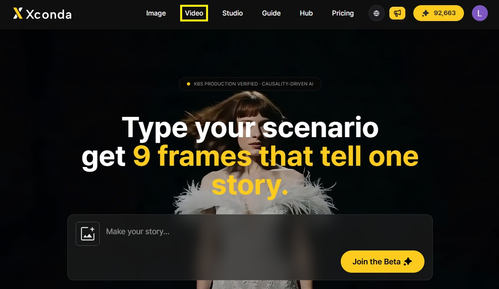
좌측 CATEGORY에서 Video가 선택된 상태를 확인하고, 우측 모델 카드 목록에서 노란색 박스로 강조된 첫 번째 Seedance 2.5 T2V 카드를 클릭합니다. 각 카드 하단에는 최대 생성 길이, 최대 해상도, 오디오 생성 지원 여부 등 핵심 사양이 요약되어 있습니다.
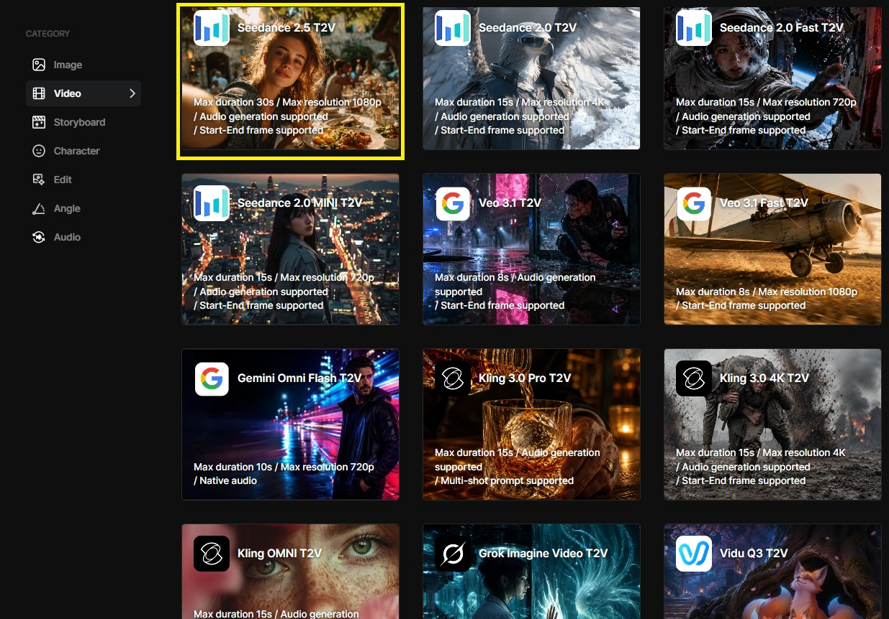
| 계열 | Xconda 지원 비디오 모델 | 주요 특징 요약 |
|---|---|---|
| Seedance | Seedance 2.5 · Seedance 2.0 · Seedance 2.0 Fast · Seedance 2.0 Mini | Seedance 2.5 기준 최대 30초, 최대 1080p, 오디오 생성 및 시작·끝 프레임 지원 |
| Veo 3.1 · Veo 3.1 Fast · Gemini Omni Flash | 최대 8~10초, 오디오 생성(Native audio) 및 시작·끝 프레임 지원 | |
| Kling | Kling 3.0 Pro · Kling 3.0 4K · Kling OMNI | 최대 15초, 오디오 생성 지원, Pro/OMNI 멀티샷 프롬프트 및 4K 해상도 지원 |
| Grok / Vidu | Grok Imagine Video · Grok Imagine Video 1.5 · Vidu Q3 | 각 엔진 고유의 스타일과 모션 해석을 지원하는 비디오 생성 모델 |
Video Generator 작업 화면 상단 Models 드롭다운에 Seedance 2.5가 선택되어 있는지 확인합니다. 그 아래 Mode 옆 꺾쇠를 클릭하면 Generation mode 목록이 열리며, 제작 목적에 맞춰 4가지 모드 중 하나를 선택합니다.
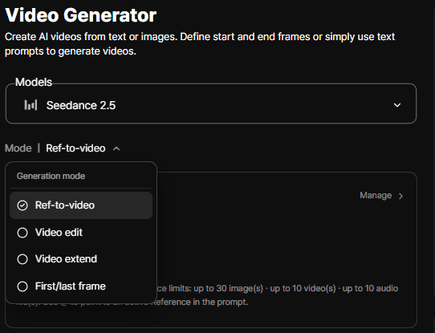
| 생성 모드 | 주요 기능 | 권장 사용 상황 |
|---|---|---|
| Ref-to-video | 레퍼런스(이미지·영상·오디오)와 프롬프트로 새 영상 생성. 레퍼런스 없이 프롬프트만 입력하면 텍스트만으로 영상 생성 | 새로운 장면을 처음부터 만들 때 (기본 모드) |
| Video edit | 기존 영상을 불러와 유지할 요소는 남기고 원하는 부분만 수정 | 생성된 영상의 날씨, 배경, 분위기 등 일부 요소만 바꾸고 싶을 때 |
| Video extend | 기존 영상의 마지막 장면에서 자연스럽게 이어지는 다음 구간을 생성 (반복 연장 가능) | 30초보다 긴 장면이나 끊김 없는 연속 동작(추격·춤·카메라 이동)이 필요할 때 |
| First/last frame | 시작 이미지와 끝 이미지를 지정하고 두 장면 사이의 움직임을 생성 | 장면의 첫 모습과 마지막 모습이 명확히 정해져 있을 때 |
별도의 Text to video 모드는 분리되어 있지 않습니다. 기본 모드인 Ref-to-video 상태에서 레퍼런스를 넣지 않고 프롬프트만 입력하면 텍스트만으로 영상이 생성됩니다. 텍스트로만 생성할 때는 활성화된 레퍼런스 전송 개수(Sending: Reference N)가 0인지 확인하세요.
늘리고 싶은 원본 영상이 길다면 마지막 8~10초 분량만 잘라 넣는 것이 레퍼런스 용량 관리에 효율적입니다. 프롬프트에는 처음 장면을 다시 설명하지 말고 그다음에 일어날 동작과 카메라 움직임만 작성하세요. 여러 번 연장을 반복해 인물이나 배경이 어긋나기 시작하면 마지막으로 자연스러웠던 장면을 이미지로 추출해 First/last frame 모드로 이어가면 안정적입니다.
Input Assets 영역 우측의 Manage >를 클릭하면 화면 오른쪽에 관리 패널이 열립니다. 상단 탭 3개(Reference · Asset Library · Options)로 자료와 설정을 관리하며, Seedance 2.5는 한 번에 이미지 최대 30개 · 영상 최대 10개 · 오디오 최대 10개까지 레퍼런스를 지원합니다.
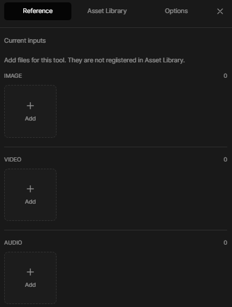
| 관리 패널 탭 | 역할 및 특징 | 주요 용도 |
|---|---|---|
| Reference | 현재 작업에만 일회성으로 사용할 미디어 파일 업로드 (공용 Asset Library에는 등록되지 않음) | 이번 컷 생성에만 참고할 콘티, 구도, 샘플 영상 및 오디오 첨부 |
| Asset Library | 계정 Library에 미리 등록해 두고 여러 프로젝트에서 반복 재사용하는 에셋 보관함 (Saved assets) | 고정 주인공 캐릭터 시트, 메인 로케이션 배경, 핵심 소품 불러오기 |
| Options | Draft 모드, 화면비(Ratio), 해상도(Resolution), 길이(Duration), High Quality 설정 | 영상 출력 규격 및 품질 옵션 조정 |
+ Add를 눌러 이미지를 업로드하면 썸네일 우측 상단에 노란색 체크 표시가 활성화되며, 하단에 @Image1과 같은 고유 호출 이름이 자동으로 붙습니다. 체크된 파일만 실제 생성 시 모델로 전송됩니다.
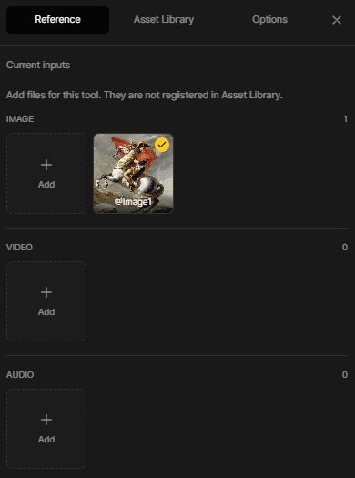
Prompt 입력칸에 생성할 영상의 장면을 작성합니다. 최대 30,000자까지 입력할 수 있으며 우측 하단에 실시간 글자 수(0 / 30000)가 표시됩니다. 입력창 하단에는 현재 적용된 옵션 요약 칩(Draft on | 1:1 | 480p | 25s | High Quality on)이 표시되며, 우측 설정 아이콘을 누르면 Options 패널이 열립니다.
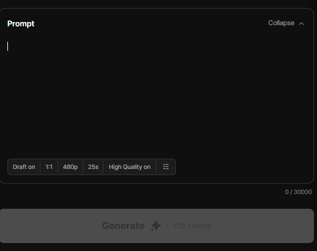
프롬프트 입력 중 @를 입력하면 Input Assets에 등록된 자료 목록이 나타나며, 클릭 시 @Image1, @Video1 같은 태그가 문장에 삽입됩니다. 레퍼런스는 업로드만 하고 프롬프트에서 부르지 않으면 모델이 어디에 반영해야 할지 알 수 없으므로, 인물이나 배경이 처음 등장하는 문장에 반드시 @태그를 붙여 역할을 지정하세요.
Seedance 2.5에는 별도의 Negative Prompt 입력칸이 없습니다. 원하지 않는 요소가 있다면 "~없음"이라는 부정어 대신 화면에 나타나야 할 긍정적인 상태로 풀어서 작성합니다.
· 작성 예시: "카메라 흔들림 없음" → "카메라는 처음 자리에 고정되어 있다 (Locked-off shot)"
우측 관리 패널의 Options 탭에서 영상의 화면비(Ratio), 해상도(Resolution), 길이(Duration), 고품질 모드(High Quality)를 설정합니다. 본편 영상을 바로 생성할 때는 상단 Draft 버튼을 Draft off로 두고 원하는 해상도를 직접 선택합니다.
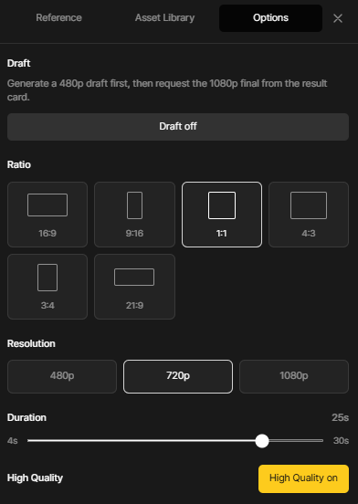
| 옵션 항목 | 지원 선택지 (Seedance 2.5 기준) | 설정 가이드 |
|---|---|---|
| Draft | Draft off / Draft on | 본편 해상도(720p·1080p) 즉시 생성 시 Draft off, 480p 초안 테스트 시 Draft on |
| Ratio (화면비) | 16:9 · 9:16 · 1:1 · 4:3 · 3:4 · 21:9 | 유튜브 가로는 16:9, 쇼츠·릴스는 9:16, 정방형 피드는 1:1, 시네마틱 와이드는 21:9 |
| Resolution (해상도) | 480p · 720p · 1080p | 해상도가 높을수록 선명하며 소모 크레딧이 증가합니다 (Draft on 시 480p 고정) |
| Duration (길이) | 4s ~ 30s 슬라이더 | 하단 슬라이더 바를 좌우로 끌어 4초부터 최대 30초까지 초 단위로 설정합니다 |
| High Quality | High Quality on / off | 활성화(노란색 버튼) 시 렌더링 품질이 향상되며 크레딧이 추가로 반영됩니다 |
Options 탭 상단의 버튼을 클릭해 노란색 Draft on 상태로 켜면, 하단 Resolution이 자동으로 480p 단일 버튼으로 고정됩니다. 적은 크레딧과 빠른 속도로 480p 초안을 먼저 여러 번 시험해 본 뒤, 마음에 드는 결과만 골라 결과 카드에서 1080p 최종본으로 변환할 수 있습니다.
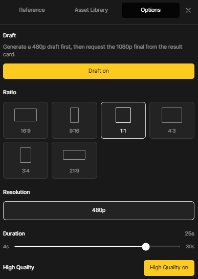
프롬프트 입력이 완료되면(예: 7526 / 30000) 하단의 Generate 버튼이 노란색으로 활성화됩니다. 좌측 상단 요약 칩(Draft on | 1:1 | 480p | 25s | High Quality on)과 버튼 우측에 표시된 소모 크레딧(예: 725 credits)을 확인한 뒤 노란색 Generate 버튼을 클릭합니다.
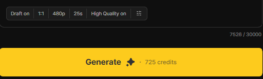
Generate 버튼을 클릭하면 화면에 "Would you like to generate a video?"(영상을 생성하시겠습니까?) 확인 모달이 나타납니다. 좌측의 노란색 OK 버튼을 클릭하면 즉시 서버로 생성 요청이 전송되며, 설정을 다시 수정하려면 우측의 Cancel을 클릭합니다.
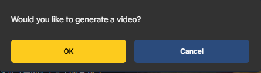
생성 요청이 접수되면 결과 영역에 "Your video is starting soon / Starting shortly" 상태 안내가 표시됩니다.
안내문: "You can leave this page. Your accepted request will keep running on the server." (이 페이지를 떠나도 접수된 요청은 서버에서 계속 실행됩니다.) 하단에는 Continue in background 표시와 함께 생성이 시작되어 취소가 불가하다는 안내("Generation has started — cancel is no longer available.")가 나타납니다.
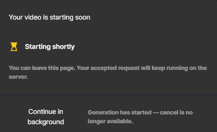
렌더링이 본격적으로 진행되면 결과 카드 좌측 상단에 현재 생성 규격 배지(예: 노란색 DRAFT · 480p)가 표시되고, 하단에 "Generating video" 문구와 함께 실시간 진행률 퍼센트(예: ~12%) 및 노란색 프로그레스 바가 표시됩니다. 생성이 100% 완료되면 우측 결과 목록에서 영상을 재생·다운로드하거나 1080p 최종본을 요청할 수 있습니다.
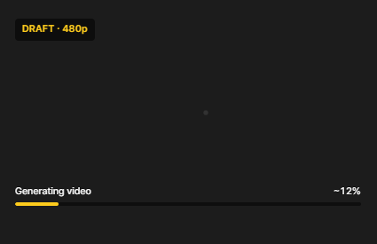
| 결과 완료 후 기능 | 동작 및 활용 방법 |
|---|---|
| 메타 정보 확인 | 각 결과물 옆 정보 패널에서 생성 일시(Date), 해상도(Resolution), 화면비(Aspect Ratio), 길이(Duration), 사용 모델(Model)을 확인합니다. |
| 미리보기 및 전체 화면 | 재생 버튼을 클릭하면 카드 내에서 미리보기가 재생되며, 영상 화면을 클릭하면 전체 화면으로 확대됩니다. |
| 1080p 최종본 요청 (Draft) | DRAFT · 480p로 생성한 초안이 마음에 들면, 해당 결과 카드에서 1080p 최종본 변환을 요청하여 고화질 본편을 완성합니다. |
| 다운로드 · 공유 · 삭제 | 영상 위에 마우스를 올려 다운로드(Save) 아이콘으로 PC에 저장하거나, 공유 아이콘으로 외부 공유, 휴지통 아이콘으로 불필요한 컷을 삭제해 작업 공간을 정리합니다. |